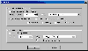

|
|
| 当前位置：电脑报电子版 > 1999 年 > 44 期 > 大众网络 > 太极高手——GetSmart使用指南 |
| 《 太极高手——GetSmart使用指南 》 |
| GetSmart是一个新推出的断点续传工具，它除具备一般断点续传软件的功能外，还有一些独特的功能，如代理引擎、服务器管理等。
GS(GetSmart)的最新版本可以从http://members.xoom.com/m507处下载，它是可使用30天的共享软件，如果你认为它好，可要花钱注册才能继续使用。软件的安装很简单，选择目录后自动安装完成并进行第一次运行，当然它会弹出软件的试用期限，确认后我们可以看到它的主界面（图1）。
二、设置篇 基本设置通过“Edit"菜单内的“Configuration"来选择，我们可以看看设置窗口（图2）。通常只需设置几个最重要的项目就可以完成基本的下载任务，下面按照重要程度依次介绍：1.“Dialup connection”(拨号连接)选项，你可以在这里使用GS自己提供的拨号方式，当然也可以仍然使用你的拨号程序。 2.“Firewall/Proxy”(防火墙/代理)选项，填写HTTP或者FTP服务代理的地址、端口等，适用于采用代理（Proxy）上网的朋友。 3.“Automation”(自动操作)选项，在这里你可以设置智能管理粘贴板，例如什么类型的文件，你还可以设置同时下载的最大数目等。 4.“Directories”(目录)选项，用来设置默认下载目录和临时下载目录，并且还可以添加附加目录，你可以填写默认的匿名服务器的E－mail地址。 5.“Hammer system”选项，该选项是控制GS在连接文件服务器时的超时服务用的。使用Hammer系统会造成网络拥挤，建议使用Normal方式或者控制Hammer的失效条件。“Mirror”(选项)，提供了对镜像服务器的管理功能。“Visual”(选项)，是对拖动图标以及日志文件的设置。“Advanced”(选项)，提供了断线后重连接的控制方法，下载进程的最大数目同样也在这里选择。 三、操作篇 GS提供很强的下载功能，而且使用也非常方便，通常下载文件的方法有三种，具体操作如下：1．选择“File”下的“Enter URL”,再在弹出的窗口内进行新任务的填写，可直接填入下载文件的地址。 2．选择“File”下的“Get URL From Clipboard”。如果你已经选择了“Advanced”内的“Catch URL From Clipboard”选项，当你拷贝链接时，会自动弹出下载属性窗口。 3．拖动下载的链接到Drop图标上，会自动弹出下载属性窗口。当然图标很可爱的，是太极图案。 四、进阶篇 除了基本设置外，GS还提供了诸如定时、重拨号、工作完毕后的控制等进一步的设置。1．定时。选择“Advanced”菜单下的“Schedule”(进度表)选项，可以进行具体设置，如：可以定制每一天的下载开始时间，也可以选择星期几。同时，你可以强行控制每天挂起的时间（图3）。 2．速度限制。该功能主要是用在你同时浏览网页时，不希望GS影响到你的正常浏览。选择“Advanced”菜单下的“Speed limit”(速度界限)选项，你可以进行设置（图4）。 3．完毕后的处理。在下载完成后，如果希望断开拨号连接，可以使用“Advanced"菜单下的“Disconnect when done”，这时就可以看到工具栏上图标会被按下一格。该图标分为三格。第一格就是“Hung up when done”，即是该功能；第二格为“Shutdown when done”，作用是下载完毕后同时关机；第三格为“Redial if disconnected”，作用是在断线时重新拨号。 五、新特点 在文章一开始我们就谈到了它有些新鲜的东西才引起我们的注意，到底是什么呢？镜像系统？多进程？都见过啊！让我来揭开它的谜底。1．可替代浏览器的引擎。前面已经提过在基本设置中有这样一个选项“Act as proxy”，它是通过这样的思路来实现的：你的浏览器在浏览时设置采用代理，地址、端口与GS中的设置一致，在浏览时它会通过GS的下载机制来下载网站数据，来提高速度。 2．外壳系统。外壳（Skins）即软件的操作界面的样式，如果你有兴趣，可以网上下载多种的Skins，就好像我们平常使用的Winamp、Winzip，一个界面用久了，一样可以换换口味。 3．服务器管理。选择“Advanced”菜单下的“Show/hide server manger”选项，我们可以看到该管理界面。它的作用主要是观察选择服务器的工作状态，帮助你手动选择速度性能更好的服务器。当然，可能它更好的功能，还要在使用中体会。 （广州 力娃） |
| 下载本期推荐软件 | 页 首 |
| 《电脑报》版权所有，CPCW网站编辑部设计制作发布 |